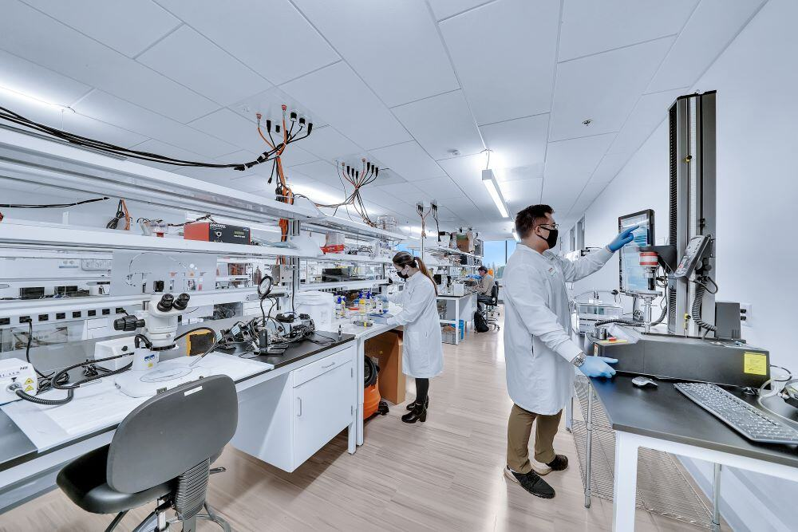

Facilities & Labs
The Robin and Doug Shore Innovation Center includes specialized spaces designed to support research, innovation, hands-on learning, and collaboration across STEM disciplines.
Cleanroom

The cleanroom supports precision research in areas such as semiconductors, microelectronics, materials science, and advanced manufacturing. This space allows students and faculty to work in a controlled environment for sensitive technology projects.
Cybersecurity Lab
The cybersecurity lab provides a dedicated environment for studying network defense, digital forensics, secure systems, and cyber risk. Students can gain experience with realistic cybersecurity scenarios while faculty conduct applied research.
Advanced Computing Lab
The advanced computing lab supports high-performance computing, artificial intelligence, data analytics, and simulation-based research. This lab helps students and researchers solve complex technical problems using modern computing resources.
High-Bay Makerspace
The high-bay makerspace is designed for large-scale student projects, prototyping, engineering design, robotics, and interdisciplinary innovation. The space encourages hands-on learning and collaboration.